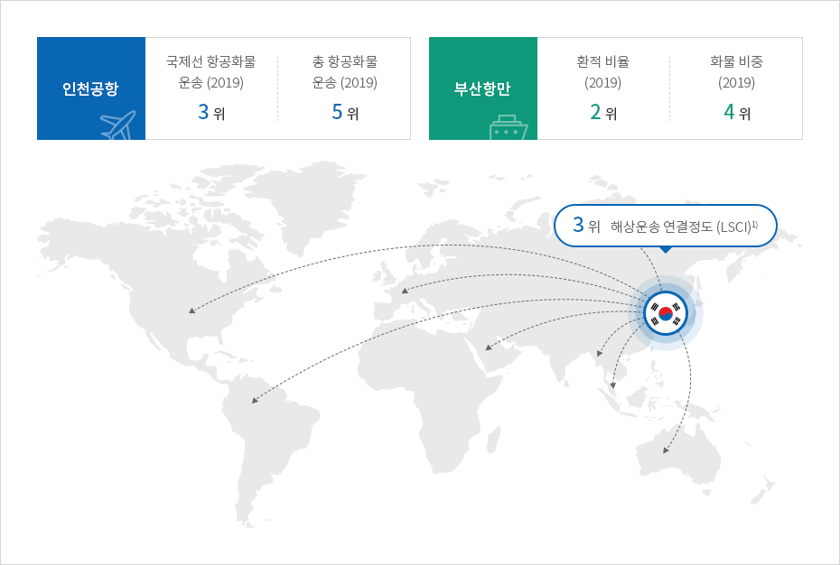
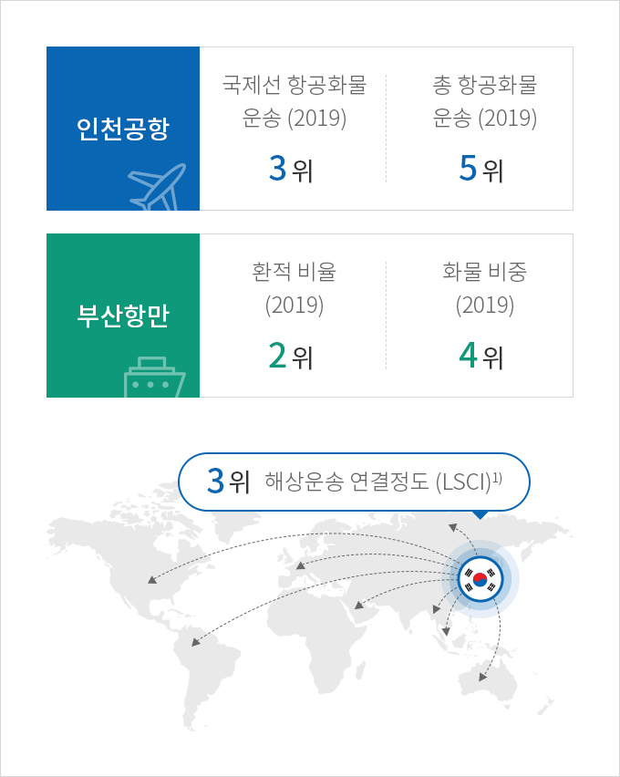
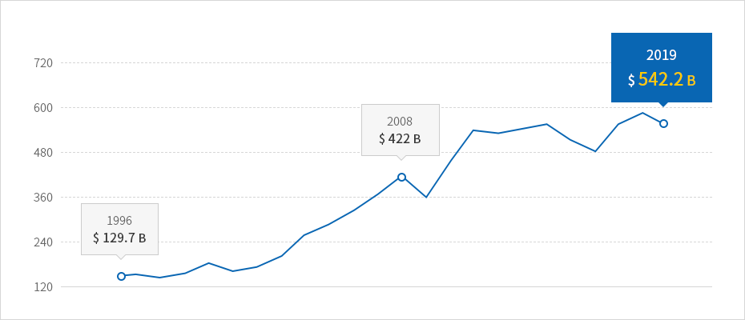
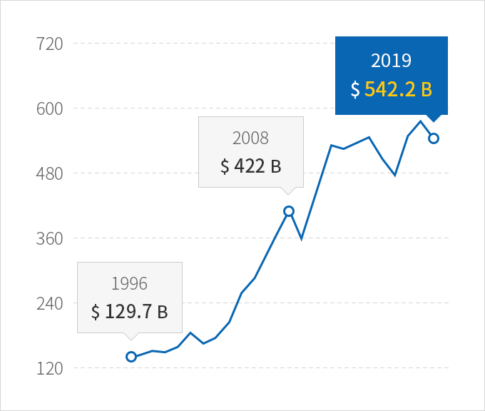
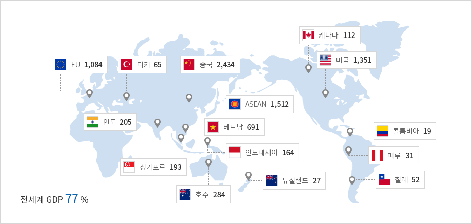
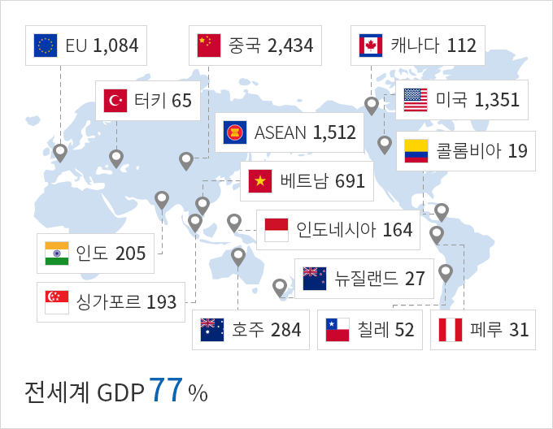

동북아 무역, 물류 허브
- Home
- Why KOREA
- 동북아 무역, 물류 허브
동아시아의 중심, 물류허브 코리아
한국은 전 세계 주요 국가 및 도시를 신속하게 연결할 수 있는 최상의 물류 인프라를 갖추고 있다.
중국, 일본과 인접해 있을 뿐만 아니라 해양, 항공으로 아시아태평양지역과 유라시아-미주 대륙을 잇는 물류의 핵심지역에 위치해있다.
향후에는 유라시아 대륙을 육상으로 관통할 수 있는 경로 구축에 대한 잠재력을 갖추고 있다.
중국, 일본과 인접해 있을 뿐만 아니라 해양, 항공으로 아시아태평양지역과 유라시아-미주 대륙을 잇는 물류의 핵심지역에 위치해있다.
향후에는 유라시아 대륙을 육상으로 관통할 수 있는 경로 구축에 대한 잠재력을 갖추고 있다.



3위 해상운송 연결정도 (105.11)
-
인천공항
- 국제선 항공화물 운송 (2019) 3위
- 총 항공화물 운송 (2019) 5위
-
부산항만
- 환적 비율 (2019) 2위
- 화물 비중 (2019) 4위

※ 1) (Liner Shipping Connectivity Index, LSCI) UNCTAD가 2006년부터 현재까지 해상 운송망의 정도를 나타내는 지표로 해상 운송 서비스 제공 회사의 수, 월별 출·입항하는 선박의 수, 컨테이너 운반 총량 등 6가지 기준으로 평가
※ 출처 : UNCTAD (2019)
※ 출처 : UNCTAD (2019)
제조업 중심의 수출 강국
한국은 세계 7위 수출 대국으로 제조업 부문을 중심으로 수출을 이어가고 있으며, 주요 수출품목은 반도체, 자동차, 석유제품, 자동차부품, 디스플레이 등이 있다. 코로나19 이후 소비재, 의약품 등 관련 품목의 수출도 큰 폭으로 증가하고 있다. 한국무역협회에 따르면, 2020년 9월 의약품 수출액은 7억 4605만 달러로 전년 동기대비 93.6% 급증, 사상 처음으로 7억 달러를 넘어섰다.



※ 출처 : KITA (2019)
아시아와 전 세계 진출의 교두보, 대한민국
대한민국은 거대 경제권인 유럽연합(EU), 미국, 중국을 포함한 세계 56개국(’20.1월 기준, 영국 포함)과 16건의 FTA를 체결하여
세계에서 세 번째로 큰 경제영토를 가지고 있다.
이로써 한국은 전 세계 국내총생산(GDP)의 77%에 해당하는 FTA 네트워크를 확보하게 되었다.
한국은 아시아의 지리적 장점을 활용하면서 전 세계 대부분의 선진국 시장에 진출할 수 있는 국가이다.
세계에서 세 번째로 큰 경제영토를 가지고 있다.
이로써 한국은 전 세계 국내총생산(GDP)의 77%에 해당하는 FTA 네트워크를 확보하게 되었다.
한국은 아시아의 지리적 장점을 활용하면서 전 세계 대부분의 선진국 시장에 진출할 수 있는 국가이다.



※ 출처 : MOTIE, KITA
대한민국 FTA 체결 현황
| 구분 | 국가 |
|---|---|
| 발효국가 | EFTA, EU, 터키, 인도, 중국, 베트남, 싱가포르, ASEAN, 호주, 뉴질랜드, 캐나다, 미국, 콜롬비아, 페루, 칠레, 중미 |
| 서명/타결국가 | 영국, 이스라엘, 인도네시아 |
| 협상 중 국가 | RCEP, 필리핀, 한·중·일, 에콰도르, Mercosur, 러시아, 말레이시아, 캄보디아, 필리핀 |
| 재개, 개시, 여건조성 | EAEU, PA |
※ 출처 : www.fta.go.kr, 2020.1월 기준